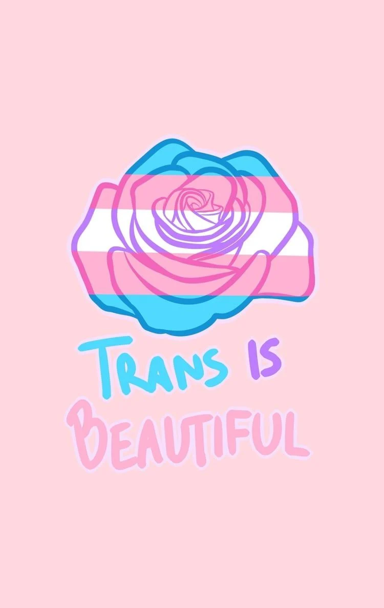
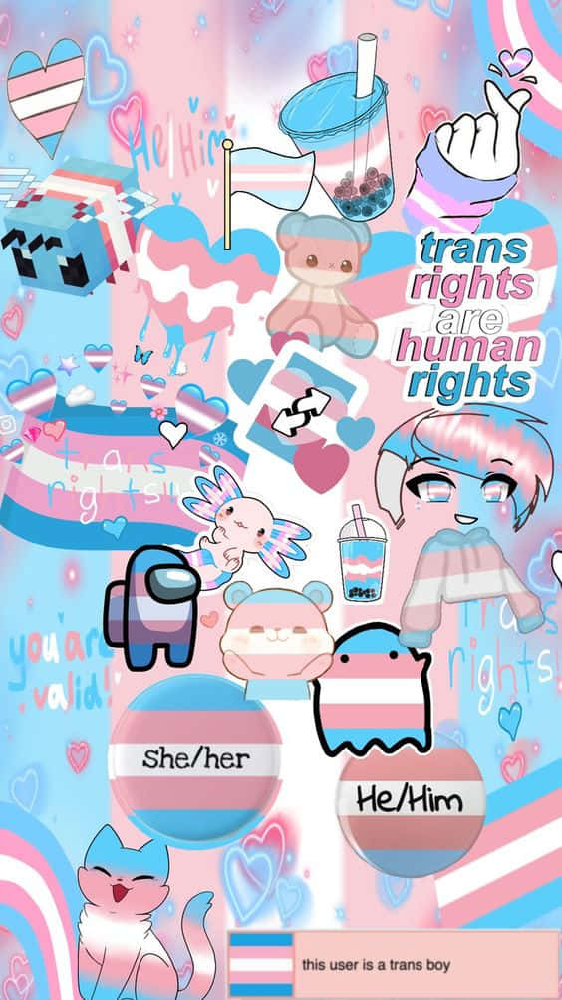

home page
Trans

Trans is when you decide you are the
OPPISITE gender of you born gender.Like if
you were female and you became trans,you would
become male.Same thing vice versa as well.
AND it pretty popular too.
Did you know?: its more common to be trans from women to men than vice verca?
